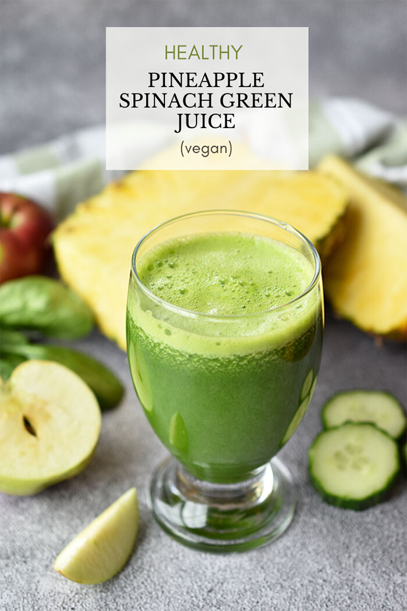

Pineapple

Description
Today I'm coming at ya with another green juice recipe. Recently I shared my
favorite green juice recipe, which is made with kale, pineapple, apple, clementines, English cucumber,
lime and ginger. This new green juice recipe is a variation of that recipe
Ingredients
- 2 handfuls baby spinach
- 1/4 of a pineapple, cored and peeled
- 1 red apple
- 1/2 English cucumber
- 1-inch knob of ginger, peeled
Steps
- Cut pineapple, apple and cucumber into chunks. Process all ingredients through a high quality juicer.
- Pour into glass, stir and serve.
return to the top
Return to main page